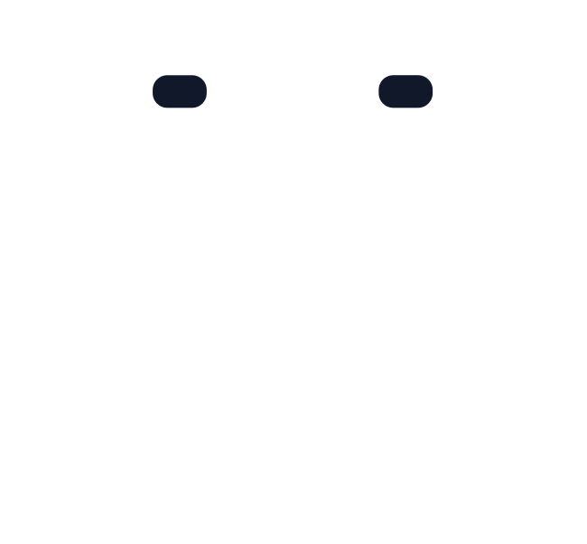

Your self-hosted AI coworker.
Assign tasks, follow progress, and review the work. Goblin keeps conversations and results connected, so your team spends less time coordinating.

Spend less time switching tools Follow conversations, progress, and results in one place.
Spend less time repeating information Keep each task connected to the conversation that started it.
Control where Goblin runs Host Goblin on infrastructure you control.
Stay involved in decisions Assign the work, review the results, and decide what happens next.
IN THE LOOP
This interactive example shows how Goblin connects a team request to progress and a proposed result for review. Every exchange is scripted; nothing is sent to an external service.
The GitHub dialogue is fictional, inspired by Stephen T.’s public dotnet/runtime issue #96277 about reducing allocations in LINQ’s OrderBy().Take(). It is not an actual exchange with Stephen T. or an endorsement.
The Teams dialogue is fictional, inspired by Anders H.’s public TypeScript issue #62606 about property declaration order changing a type-checking error. The issue is closed; this scenario imagines a regression coverage review, not an actual exchange or endorsement.
The email dialogue is fictional, inspired by Linus T.’s September 2024 reply about an AtomISP build fix, accepted as Linux commit 7c6a3a65ace7. It revisits a historical patch review, not an actual Goblin exchange or endorsement.
Renko K.’s Discord dialogue is fictional, inspired by Circles Arrows’s public company description and its graph database tools, Blueprint41 and Compare41. The sample project is invented; it is not an actual exchange or endorsement.
The website illustrates channels including Teams, Discord, and email. Their appearance here does not mean those integrations are currently available.
Select a channel to see an example task. Use Activity, Work, and Files to explore progress, review details, and proposed results. The message box is a visual preview and does not accept messages. Reduced-motion preferences are respected.
EXAMPLE · FOR REVIEW
 GitHub
GitHub